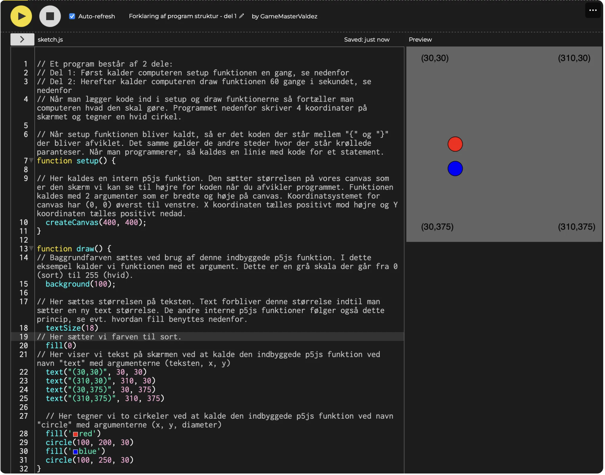
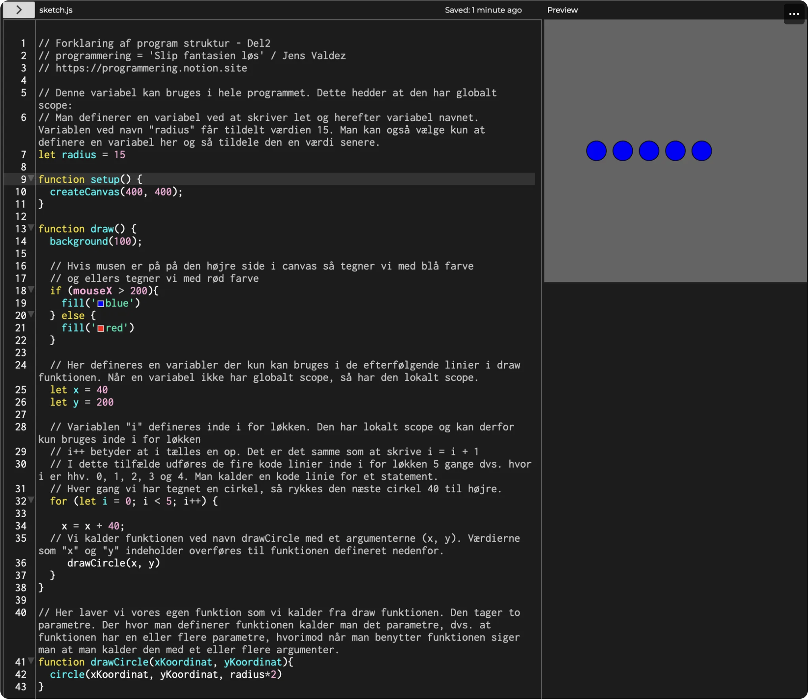
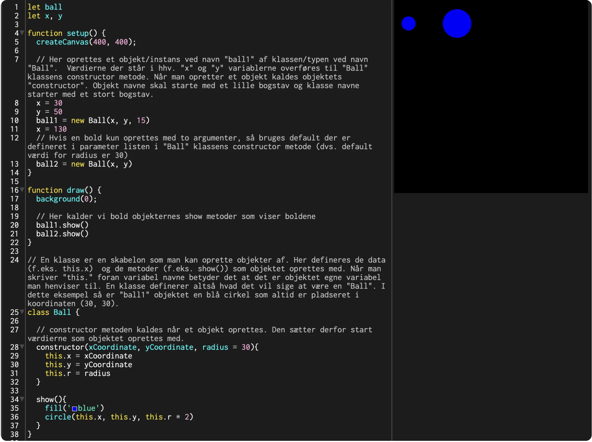
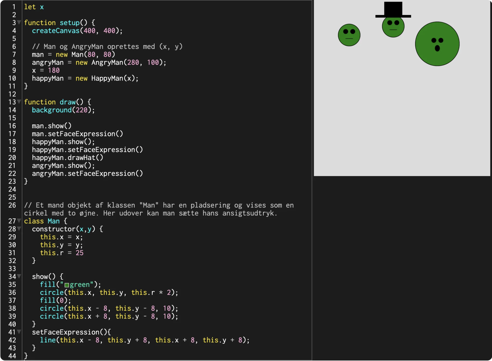
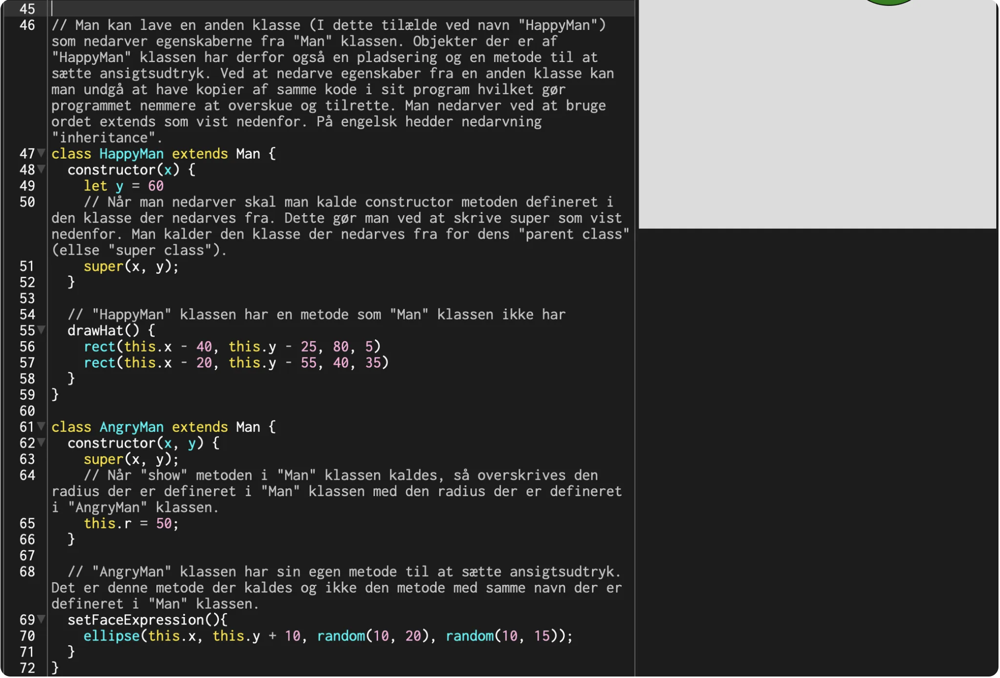
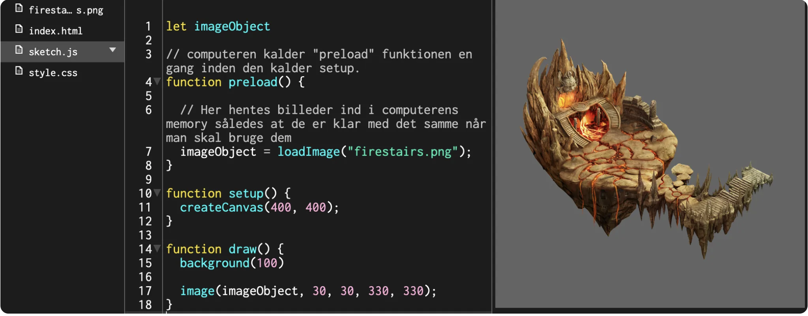

Indhold
Indledning
Der er en del at forklare med hensyn til hvordan et program er opbygget og hvad man har af muligheder. Jeg har derfor valg at dele forklaringen op. Nedenfor er vist stor set alt hvad man skal vide med hensyn til hvordan et program er opbygget og hvad man har af muligheder. Resten er udelukkende at skrive kode der kalder de interne p5js funktioner.
Vigtigt: Det gør ikke noget hvis du ikke forstår det hele. Vi kommer til at lave en masse spændende opgaver som langsom introducerer de forskellige elementer. Nedenstående kan derfor bruges som reference hvis man er i tvivl om hvordan man kan opbygge et program.
Forklaring af program struktur - Del 1 - Koordinat system og brug af interne p5js funktioner
Klik på billedet for at gøre det større.

Forklaring af program struktur - Del 2 - Variabler, scope og egne funktioner
Klik på billedet for at gøre det større.

Forklaring af program struktur - Del 3 - Objekt Orienteret Programmering
Klik på billedet for at gøre det større.

Forklaring af program struktur - Del 4 - Nedarvning (Engelsk: Class Inheritance)
Klik på billederne for at gøre dem større.


Forklaring af program struktur - Del 5 - Brug af billeder
Klik på billedet for at gøre det større.
